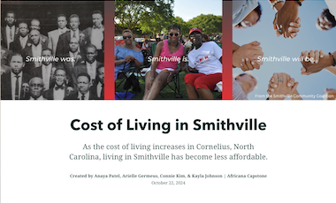

Creating Maps
The Digital Learning & Scholarship team can help students and faculty explore a variety of mapping tools to spatially represent your ideas, including:
- StoryMap JS: Low-barrier tool that presents geographically tagged information as a set of slides.
- ArcGIS StoryMaps: Intuitive tool that allows users to create a streamlined webpage with a flexible variety of maps, images, and text.
- Historypin: Collaborative tool that allows communities, organizations, and classes to pin collections of media and text to a shared public map.
Mapping Projects Created at Davidson:

Cost of Living in Smithville
ArcGIS StoryMap by students in AFR 495: Africana Capstone
Cost of Living in Smithville
ArcGIS StoryMap by students in AFR 495: Africana Capstone